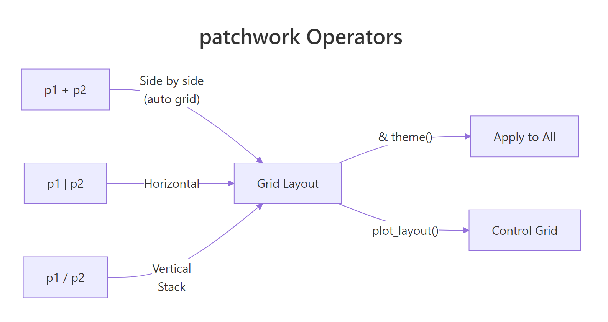
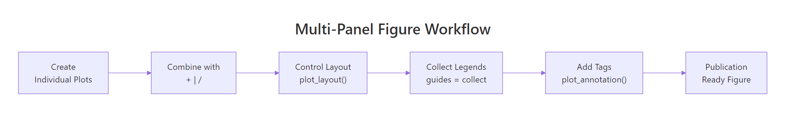
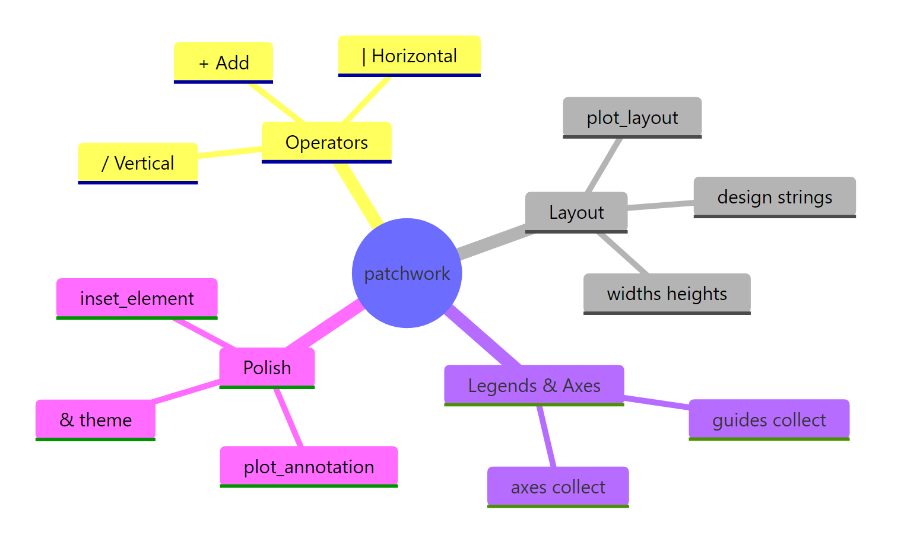

patchwork in R: Combine Multiple ggplot2 Plots With Aligned Axes and Shared Legends
The patchwork package makes it ridiculously simple to combine multiple ggplot2 plots into a single figure — just add them together with +, stack them with /, or place them side-by-side with |, and patchwork handles alignment, spacing, and shared legends automatically.
How do you combine two ggplot2 plots with patchwork?
Combining plots is one of the most common tasks in data visualization. Maybe you've built a scatter plot and a histogram that tell a richer story side by side, or you need a multi-panel figure for a report. patchwork lets you do this in one line of code — literally add two plots together.
That + operator is doing all the work. patchwork overloads + so that when you "add" two ggplot objects, it places them side by side in a grid. No grid.arrange(), no complicated layout matrices — just +.
But + isn't your only option. patchwork gives you two more operators that communicate your intent more clearly.
The | operator forces horizontal placement and / forces vertical stacking. Use | and / when you want to be explicit about direction — they make your layout code read like a description of the figure.
plot() or hist() won't work directly. Wrap them in wrap_elements(~plot(...)) if you need to mix base and ggplot2 graphics.Try it: Create a boxplot of mpg by cyl and a bar chart counting cars per gear from the mtcars dataset, then combine them horizontally with |.
Click to reveal solution
Explanation: The | operator explicitly places the two plots side by side, just like + would, but communicates horizontal intent more clearly.
How do you control the number of rows and columns?
When you combine more than two plots, patchwork arranges them in an auto-calculated grid — trying to keep things roughly square. But often you want a specific layout, like everything in one column or a 2×3 grid.
The plot_layout() function gives you that control. Think of it as the layout manager: it tells patchwork how many rows and columns to use.
The ncol = 1 argument forces all three plots into a single column. You could also use nrow = 1 to force a single row, or specify both for exact control.
What if your plots shouldn't all be the same size? The widths and heights arguments let you set relative proportions.
widths = c(2, 1) means the first plot gets twice the space of the second. The values c(2, 1), c(4, 2), and c(200, 100) all produce the same layout.Try it: Arrange four plots (p1, p2, p3, and a new density plot) in a 2×2 grid where the left column is three times wider than the right.
Click to reveal solution
Explanation: ncol = 2 creates two columns, and widths = c(3, 1) makes the left column occupy 75% of the width.
How do you build complex layouts with nesting and design strings?
Real figures often need more than a uniform grid. You might want two small plots on top and one wide plot spanning the bottom. Patchwork gives you two ways to build these complex arrangements: nesting with parentheses and design strings.
Parentheses create sub-layouts within your composition. Everything inside parentheses gets arranged as a group first, then that group takes up one slot in the outer layout.
That reads almost like a sentence: "p1 beside p2, above p3." The parentheses group the top row, and / stacks it above p3.
For even more control, design strings let you sketch out your layout using a text grid. Each letter represents one plot, and # marks empty cells.
Each letter in the design string maps to a plot in the order they were added. Plot A (p1) fills four cells, Plot B (p2) gets one cell top-right, and Plot C (p3) gets one cell bottom-right. This is the most flexible layout approach patchwork offers.
# in design strings for empty cells. For example, "A#\n#B" puts plot A top-left and plot B bottom-right with empty space in between.Try it: Create a layout where one wide plot spans the entire top row and two plots sit below it, side by side. Use either nesting with parentheses or a design string.
Click to reveal solution
Explanation: (p1 | p2) groups the bottom row horizontally, then / stacks p3 above it.
How do you share legends and collect axes across plots?
When multiple plots use the same color mapping, you end up with duplicate legends — one per plot. That wastes space and looks cluttered. patchwork's guides = "collect" gathers identical legends into one.
Let's build three scatter plots that all color points by the number of cylinders.
Instead of three identical legends eating up space, patchwork detects that all three use the same color mapping and keeps just one copy. The legend moves to the position defined by the global theme (right side by default).
Shared axes work similarly. When side-by-side plots share the same y-axis, displaying it on every panel is redundant. The axes argument handles this.
With axes = "collect", the redundant y-axis on the right plot disappears. If you only want to merge the axis titles (but keep the tick labels), use axis_titles = "collect" instead.

Figure 1: How patchwork operators combine plots into layouts.
color = factor(cyl) with the same scale, patchwork recognizes them as duplicates. But if one uses a custom color palette and the other doesn't, patchwork treats them as different legends.Try it: Create two scatter plots from mtcars — one mapping wt to x and one mapping hp to x — both coloring by factor(cyl). Combine them and collect the shared legend.
Click to reveal solution
Explanation: Both plots use the same color aesthetic and scale, so guides = "collect" merges them into one legend positioned on the right.
How do you add titles, subtitles, and panel tags?
Publication-quality figures need more than just the individual plot titles — they need an overall title that describes the entire composition and panel labels like (A), (B), (C) so you can reference specific panels in your text.
plot_annotation() handles both. It adds metadata that sits above or below the entire combined figure.
The tag_levels = "A" argument auto-labels each panel as A, B, C. Other options include "1" for numbers, "i" for lowercase Roman numerals, and "I" for uppercase Roman numerals.
You can customize how tags look by modifying the plot.tag theme element. The & operator (which we'll cover in the next section) applies the theme change to every panel.
tag_levels = c("A", "1") to get A1, A2, B1, B2 when you have nested patchworks. This is useful for complex multi-panel figures in academic publications.Try it: Create a 3-panel figure using p1, p2, and p3, add panel tags using Roman numerals ("I"), and give the figure an overall title.
Click to reveal solution
Explanation: tag_levels = "I" produces uppercase Roman numerals. plot_annotation() places the title above all three panels.
How do you modify all plots at once with & and *?
After combining plots, you often want to apply the same theme or modification to every panel — switching all plots to theme_minimal(), for instance, or changing font sizes across the board. patchwork's & operator does exactly this.
The & operator reaches into every plot in the composition and applies whatever modification you put after it. It's the "broadcast" operator — one change, applied everywhere.
But what if you have nested layouts and only want to modify the outer level? That's where * comes in. It applies modifications only to the current nesting level, without reaching into nested sub-patchworks.
In practice, & is what you'll use 95% of the time. The * operator matters when you build deeply nested compositions where inner sub-layouts should keep their own styling.
& reaches into nested patchworks but * does not. If you're seeing unexpected theme behavior, check whether you're using & (broadcast to all) or * (current level only). This distinction only matters with nested layouts.Try it: Combine p1, p2, and p3 and apply & theme_bw() to change all their themes at once.
Click to reveal solution
Explanation: The & operator broadcasts theme_bw() to every plot in the patchwork, overriding their default theme.
How do you add insets and spacers?
Sometimes you need a small plot overlaid on a larger one — like a zoomed-in detail view, a summary statistic, or a mini-map. patchwork's inset_element() places one plot on top of another without consuming a grid cell.
Let's overlay a zoomed scatter plot on top of the full view.
The left, bottom, right, and top arguments position the inset using 0-1 coordinates relative to the panel area. So left = 0.55, bottom = 0.55 puts the inset's lower-left corner just past the middle of both axes.
For adding empty space between plots — maybe for visual breathing room or to align with a non-plot element — use plot_spacer().
The spacer takes up one cell in the grid, creating a gap between your plots.

Figure 2: The multi-panel figure workflow from individual plots to publication-ready output.
inset_element() positions use 0-1 coordinates relative to the panel area. Set align_to = "plot" to position relative to the full plot area (including margins), or align_to = "full" for the entire figure.Try it: Place a plot_spacer() between p1 and p2 in a horizontal layout, creating a visual gap.
Click to reveal solution
Explanation: plot_spacer() creates an empty cell in the grid layout, producing visible separation between the two plots.
Practice Exercises
Exercise 1: Multi-panel iris figure with shared legend
Build a 3-panel publication figure from the iris dataset:
- Panel A: scatter plot of Sepal.Length vs Sepal.Width, colored by Species
- Panel B: boxplot of Petal.Length by Species, colored by Species
- Panel C: histogram of Petal.Width, filled by Species
Use a design string to place A on the left spanning both rows, B top-right, and C bottom-right. Collect the shared legend, add panel tags (A/B/C), and give the figure an overall title "Iris Dataset Overview."
Click to reveal solution
Explanation: The design string "AB\nAC" allocates two rows and two columns: plot A fills the entire left column (rows 1 and 2), while B and C each get one cell on the right. guides = "collect" merges the Species legends.
Exercise 2: Diamond dashboard with inset
Create a 4-panel dashboard from the diamonds dataset (use a 5000-row sample for speed):
- Price distribution histogram
- Carat vs price scatter plot (colored by cut)
- Bar chart of diamond cuts
- An inset with a small density plot of
log(price)overlaid on the histogram panel
Arrange panels 1-3 in a custom layout. Use & theme_minimal(), collect guides, and add an overall title.
Click to reveal solution
Explanation: We first attach the inset to the histogram panel, then combine all three panels with nesting operators. The & applies theme_minimal() to every component.
Exercise 3: Before/after comparison with collected axes
Build a before/after comparison from mtcars:
- Panel A: scatter plot of mpg vs wt for 4-cylinder cars only
- Panel B: scatter plot of mpg vs wt for 6-cylinder cars only
- Both colored by
factor(am)(transmission type) - Collect the shared y-axis with
axes = "collect" - Collect the shared legend with
guides = "collect" - Add panel tags "A" and "B"
- Add an inset density plot of
mpgin the corner of panel A
Click to reveal solution
Explanation: axes = "collect" removes the redundant y-axis from panel B. guides = "collect" merges the identical transmission legends. The inset density plot is attached to panel A before combining.
Putting It All Together
Let's build a publication-ready 4-panel figure from the mpg dataset. This walkthrough combines everything: layout control, shared legends, collected axes, panel tags, annotations, and theme management.
First, create four individual plots that explore different aspects of the data.
Now combine them using a design layout, collect guides, add annotations, and apply a unified theme.
This figure is ready for a journal submission or report. The design string creates a clean 2×2 grid, guides = "collect" removes duplicate legends, and & theme_minimal() applies a consistent look. The plot_annotation() gives the whole composition context, and tag_levels = "A" adds panel references.
Summary
Here's a quick reference of every key patchwork function and operator.
| Function / Operator | Purpose | Example | ||
|---|---|---|---|---|
+ |
Combine plots into auto grid | p1 + p2 |
||
| `\ | ` | Place plots horizontally | `p1 \ | p2` |
/ |
Stack plots vertically | p1 / p2 |
||
& |
Apply modification to ALL plots | (p1 + p2) & theme_bw() |
||
* |
Apply modification to current level | (p1 + p2) * theme_bw() |
||
plot_layout() |
Control grid dimensions, widths, guides, axes | plot_layout(ncol = 2, guides = "collect") |
||
plot_annotation() |
Add overall title, subtitle, caption, tags | plot_annotation(title = "...", tag_levels = "A") |
||
inset_element() |
Overlay a small plot on top of another | inset_element(p, left=.5, bottom=.5, right=1, top=1) |
||
plot_spacer() |
Add empty cell in layout | p1 + plot_spacer() + p2 |
||
wrap_elements() |
Include non-ggplot objects | wrap_elements(~plot(1:10)) |
||
wrap_plots() |
Assemble plots from a list | wrap_plots(plot_list, ncol = 2) |

Figure 3: Overview of the patchwork package's main features.
References
- Pedersen, T.L. — patchwork: The Composer of Plots. Official documentation. Link
- Pedersen, T.L. — Plot Assembly guide (patchwork). Link
- Pedersen, T.L. — Controlling Layouts (patchwork). Link
- Wickham, H. — ggplot2: Elegant Graphics for Data Analysis, 3rd ed. Chapter 9: Arranging Plots. Link
- CRAN — patchwork package reference manual. Link
- Pedersen, T.L. — "A small patch of free features" (patchwork 1.2.0 release notes). Link
- R Graph Gallery — Combine Multiple Plots with patchwork. Link
Continue Learning
- ggplot2 Facets — When you need the same plot repeated across subgroups instead of combining different plots.
- ggplot2 Legends — Deep dive into customizing the legends that patchwork collects and aligns.
- ggplot2 Labels and Annotations — Master titles, subtitles, and text annotations for individual plots before combining.